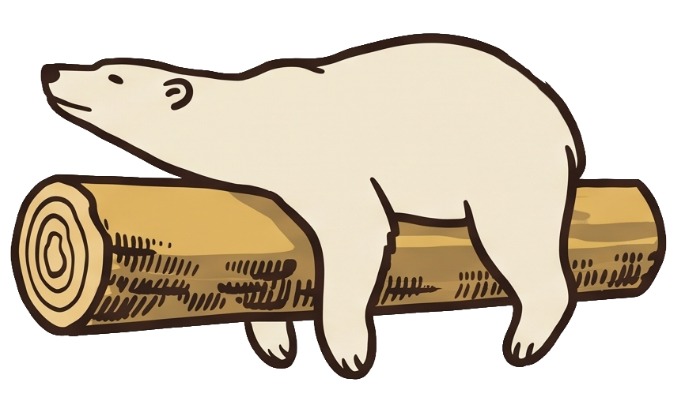

RANHEIM
KRAFT
Cached
Hovedside
Tabell
Quiz
Kort
Liste
Ruletten
I dag / I kveld
0
I helga
0
Denne uka
0
Alle dager
0
Ut etter 19
Omrade:
Alle
Ranheim & Ost
Midtbyen
Sorbyen
•
Alle typer
Konsert
Sport
Kultur
Gratis
Mat & Sosialt
Trondheims-ruletten anbefaling
Arrangementer
0 arrangementer
Varsel